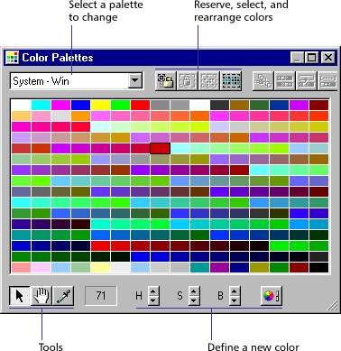
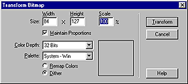
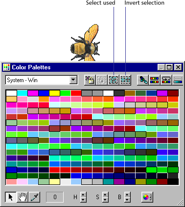

Using Director > Color, Tempo, and Transitions > Controlling color > Using the Color Palettes window
Using Director > Color, Tempo, and Transitions > Controlling color > Using the Color Palettes window |
Using the Color Palettes window
Use the Color Palettes window to change and rearrange color palettes and to determine which colors in a palette are used in an image. This section explains basic features of the Color Palettes window. For a description of specialized features, see Special Color Effectsin the Director Support Center.

If you add new palettes to your movie from other graphics applications, those palettes appear in the palette list and in the Cast window.
The row of buttons on the right side of the Color Palettes window are for reserving, selecting, and rearranging colors in the current palette. If you attempt to change one of the nine built-in palettes, Director creates a copy of the palette for you to modify.
Note: Choosing a new palette in the Color Palettes window does not change the palette for the movie or any frame in the movie. Use the Movie tab in the Property Inspector to choose the movie color palette or choose Modify > Frame Palette to change the color palette at a particular frame.
When you modify a palette, all the cast members using the palette change as well, so make sure you always keep a copy of the original palette.
To open the Color Palettes window:
Choose Window > Color Palettes.
To edit a palette already used in a movie:
1 |
Choose Window > Color Palettes. |
2 |
Select the palette you want to edit from the Palettes pop-up menu. |
3 |
Double-click any color within the palette. |
Director makes a copy of the palette and prompts you to enter a name. |
|
4 |
Enter a name and press OK. |
5 |
Edit the palette using any of the methods discussed later in this section. |
6 |
Select all the cast members that use the old version of the palette, or use Find to locate all the cast members using a particular palette. |
7 |
Choose Modify > Transform Bitmap and select the desired options.
 |
Note: Be sure to select Remap Colors, not Dither.
8 |
Click Transform to remap all the cast members to the new palette. |
To select one or more colors:
1 |
Click a color in the Color Palettes window. If the selection arrow is not active, click the Arrow tool at the bottom of the window.
|
2 |
To select a range, drag across colors—or click the first color in the range, and then Shift-click the last. |
3 |
Control-click (Windows) or Command-click (Macintosh) to select multiple discontiguous colors. |
To match the color of any pixel on the Stage with the same color in the palette:
1 |
Click the Eyedropper tool.
|
2 |
Drag any color in the Color Palettes window to any point on the Stage. |
The selection in the Color Palettes window and the foreground color in the Tool palette changes to the color at the pointer location. |
|
To select colors in the palette used by the current cast member:
1 |
Select the cast member or open the cast member in the Paint window.
 |
2 |
|
To select all colors not currently selected:
Click the Invert Selection button in the Color Palettes window.